| 編號 | 照片 | 名稱 |
| 01 | 紫絹莧 | |
| Aerve songuinolentacv. 'Songuinea' | ||
| 莧草科 Amaranthaceae | ||
| 02 | 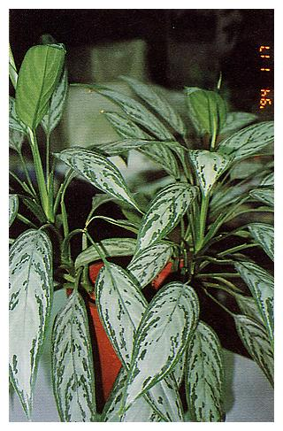 | 銀王粗肋草 |
| Aglaonema cv. Silver King' | ||
| 天南星科 Araceae. | ||
| 03 | 粗肋草 | |
| Aglaonema modestum. | ||
| 天南星科 Araceae. | ||
| 04 |  |
斑葉鳳梨 |
| Ananas comosus‘Variegatus’ | ||
| 鳳梨科 Bromeliaceae | ||
| 05 | 小葉南洋杉 | |
| Araucaria heterophylla(Salisb.) Franco | ||
| 南洋杉科 Araucariaceae | ||
| 06 |  |
武竹、天門冬 |
| Asparagus densiflorusJessop cv. "Sprengen" | ||
| 百合科 Liliaceae | ||
| 07 |  |
台灣山蘇花、山蘇花、鳥巢蕨、雀巢蕨 |
| Asplenium nidus L. | ||
| 鐵角蕨科 Aspleniaceaee | ||
| 08 | 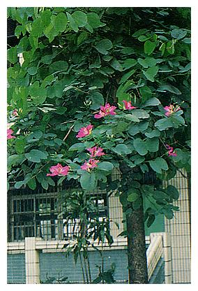 | 豔紫荊、洋紫荊 |
| Bauhinia blakeana Dunn | ||
| 蘇木科 Caesalpiniaceae | ||
| 09 | 羊蹄甲、香港櫻花 | |
| Bauhinia Variegata L. | ||
| 蘇木科 Caesalpiniaceae | ||
| 10 |  |
射干、尾蝶花、紅尾蝶花 |
| Belamcanda chinensis | ||
| 鳶尾科 Iridaceae |
| 編號 | 照片 | 名稱 |
| 11 |  |
彩葉山漆莖 |
| Breynia disticha Forstcv. "Roseo picta" | ||
| 大戟科 Euphorbiaceaee | ||
| 12 |  |
構木、鹿仔樹 |
| Broussonetia papyrifera L Herit | ||
| 桑科 Moraceae | ||
| 13 |  |
落地生根、倒吊蓮、倒地蓮、天燈籠 |
| Bryophyllum pinnatum(Lam.) Kurzt | ||
| 景天科 Crassulaceae | ||
| 14 | 金鳳花、黃蝴蝶 | |
| Caesalpinia pulcherrima(L.) Swartz | ||
| 蘇木科 Caesalpiniaceae | ||
| 15 |  |
紅豔彩葉芋 |
| Caladium hortulanum' Postman Joyner' | ||
| 天南星科 Araceae | ||
| 16 | 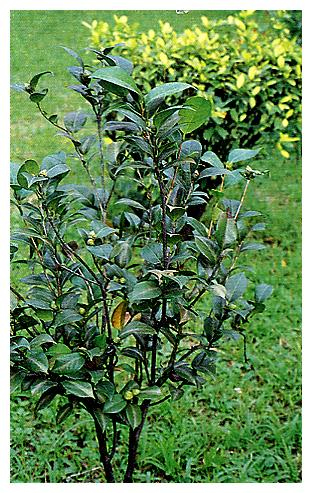 | 山茶 |
| Camellia japonica Linn. | ||
| 山茶科 Theaceae | ||
| 17 | 食用美人蕉、蓮蕉花、曇華、蓮蕉 | |
| Canna edulis Ker-Gawl | ||
| 美人蕉科 Cannaceae | ||
| 18 | 阿勃勒 | |
| Cassia fistula L. | ||
| 蘇木科 Caesalpiniaceae | ||
| 19 |  |
袖珍椰子 |
| Chamaedorea elegans mart. | ||
| 棕櫚科 Palmae | ||
| 20 | 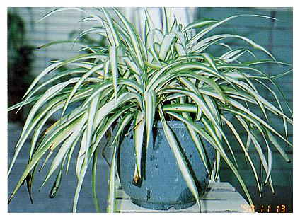 | 吊蘭、掛蘭 |
| Chlorphytum comosum | ||
| 百合科 Liliaceae |
| 編號 | 照片 | 名稱 |
| 21 | 美人樹 | |
| Chorisia speciosa St. Flil | ||
| 木棉科 Bombaceae | ||
| 22 |  |
黃椰子 |
| Chrysalidocarpus lutescensH. Wendl. | ||
| 棕櫚科 Palmae | ||
| 23 |  |
菊花、池菊、菊仔、日精 |
| Chrysanthemum morifoliumRamat.var sinense Mak. | ||
| 菊科 Compositae | ||
| 24 | 朱焦，紅竹，朱竹、千年木，千年蕉 | |
| Cordyline ssp | ||
| 龍舌蘭科 Agavaceae | ||
| 25 |  |
文珠蘭、文殊蘭、海蕉 |
| Crinum asiatcum L. | ||
| 石蒜科 Amaryllidaceae | ||
| 26 |  |
輪傘莎草、輪傘草、傘草 |
| Cyperus alternifolisssp. flabelliformis | ||
| 莎草科 Cyperaceae | ||
| 27 |  |
番仔林投、狹葉龍血 |
| Dracaena angustifolia | ||
| 龍舌蘭科 Agavaceae | ||
| 28 |  |
黃邊香龍血樹、巴西鐵樹 |
| Dracaena fragrans(L.) Kercv. 'Lindenii' | ||
| 龍舌蘭科 Agavaceae | ||
| 29 |  |
紅邊竹蕉 |
| Dracaena marginata | ||
| 龍舌蘭科 Agavaceae | ||
| 30 | 斑葉萬年青、黃金竹蕉、黃金萬年竹 | |
| Dracaera sanderiana | ||
| 龍舌蘭科 Agavaceae |
| 編號 | 照片 | 名稱 |
| 31 |  |
萬年青、萬年竹、綠葉竹蕉 |
| Dracaena sanderiana cv.'Virens' | ||
| 龍舌蘭科 Agavaceae | ||
| 32 | 金露花、苦林盤、台灣連翹 | |
| Duranta repens L. | ||
| 馬鞭草科 Verbenaceae | ||
| 33 | 葉下紅、一點紅、牛石菜 | |
| Emiliasonchifolia A. DC. | ||
| 菊科 Compositae | ||
| 34 |  |
麒麟花、花麒麟 |
| Euphorbia milli Desmoul. | ||
| 大戟科 Euphorbiaceae | ||
| 35 |  |
聖誕紅、聖誕花、猩猩木、一品紅 |
| Euphorbia pulcherrima Willd.et. Klotz. | ||
| 大戟科 Euphorbiaceae | ||
| 36 | 黃紋萬年麻 | |
| Furcraea foetida cv.'striata' | ||
| 龍舌蘭科 Agavaceae | ||
| 37 | 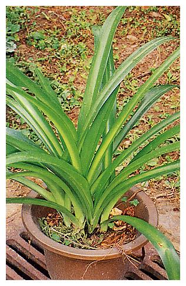 | 螫蟹花 |
| Hymenocallis speciosa(L.f.ex.Salisb.) Salisb. | ||
| 石蒜科 Amaryllidaceae | ||
| 38 | 非洲鳳仙花 | |
| Impatiens walleriana Hook.f. | ||
| 鳳仙花科 Balsaminaceae | ||
| 39 |  |
空心菜、蕹菜、甕菜 |
| Ipomoea aquatica Forsk | ||
| 旋花科 Convolvulaceae | ||
| 40 | 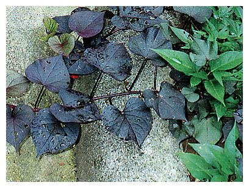 | 甘藷、番藷 |
| Ipomoea batatas（L.） | ||
| 旋花科 Convolvulaceae |
| 編號 | 照片 | 名稱 |
| 41 |  |
龍柏 |
| Juniperus chinensisL. Cv. "Kaizuka" | ||
| 柏科 Cupressaceae | ||
| 42 | 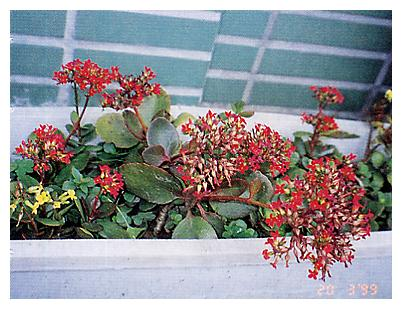 | 長壽花、壽星花 |
| Kalanchoe blossfeldiana | ||
| 景天科 Crassulaceae | ||
| 43 |  |
蒲葵 |
| Livistona chinensis | ||
| 棕櫚科 Palmae | ||
| 44 | 小葉桑 | |
| Morus australis Poir. | ||
| 桑科 Moraceae | ||
| 45 |  |
羅勒、七層塔、九層塔 |
| Ocimumbasilicum L. | ||
| 唇形科 Labiatae | ||
| 46 |  |
馬拉巴栗、大果木棉 |
| Pachira aquaticaAbul. | ||
| 木棉科 Bombaceae | ||
| 47 | 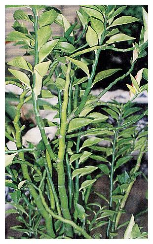 | 銀龍、花銀龍、大銀龍、龍鳳木、紅雀珊瑚 |
| Pedilanthus tithymaloides（L.）Poit | ||
| 大戟科 Euphorbiaceae | ||
| 48 | 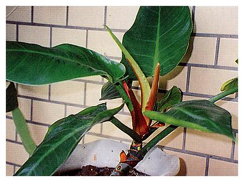 | 箭葉蔓綠絨 |
| Philodendron cv.' Wend-imbe' | ||
| 天南星科 Araceae | ||
| 49 |  |
心葉蔓綠絨 |
| Philodendron oxycardium | ||
| 天南星科 Araceae | ||
| 50 |  |
台灣海棗、麵木 |
| Phoenix hanceana Nau.Var. formosana Becc. | ||
| 棕櫚科 Palmae |
| 編號 | 照片 | 名稱 |
| 51 | 羅比親王海棗、羅比親王椰子 | |
| Phoenix roebelenii O'Brien | ||
| 棕櫚科 Palmae | ||
| 52 | 小葉冷水麻、小水麻 | |
| Pilea microphylla(L.)Liebm. | ||
| 蕁麻科 Urticaceae | ||
| 53 |  |
竹柏、南攻竹柏山杉、南港竹柏 |
| Podocarpus nonkoensisHayata | ||
| 羅漢松科 Podocarpaceae | ||
| 54 | 松葉牡丹、大花馬齒莧、半枝蓮、午時草 | |
| Portulaca grandifloraHook | ||
| 馬齒莧科 Portulacaceae | ||
| 55 | 毛馬齒莧、午時草、小半支蓮、禾雀舌翠草 | |
| Portulaca pilosa L. | ||
| 馬齒莧科 Portulacaceae | ||
| 56 |  |
樹馬齒莧 |
| Portulacaria afra (L.) Jacq. | ||
| 馬齒莧科 Portulacaceae | ||
| 57 |  |
梅 |
| Prunus mume. et Zuce | ||
| 薔薇科 Rosaceae | ||
| 58 | 桃 | |
| Prunus persica Stokes | ||
| 薔薇科 Rosaceae | ||
| 59 | 觀音棕竹、筋頭竹、琉球竹 | |
| Rhapis excelsa (Thunb)Henry ex. Rehd. | ||
| 棕櫚科Palmae | ||
| 60 | 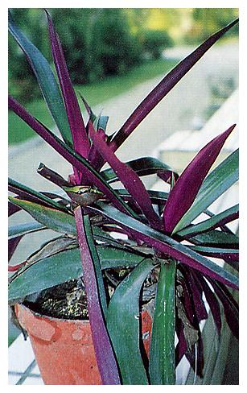 | 蚌蘭、紅川七、紫背鴨趾草、紫背萬年青 |
| Rhoeo spathacea (SW.) Stearn | ||
| 鴨趾草科 Commelinaceae |
| 編號 | 照片 | 名稱 |
| 61 | 一串紅、鼠尾草、爆竹紅 | |
| Salvia splendens Ker. | ||
| 唇形科 Lamiaceae | ||
| 62 | 虎尾蘭、千歲蘭、虎皮蘭 | |
| Sansevievia spp. | ||
| 龍舌蘭科 Agavaceae | ||
| 63 |  |
斑卵葉鵝掌藤 |
| Schefflera arboricola cv.‘Hongkong Variegata’ | ||
| 五加科 Araliaceae | ||
| 64 | 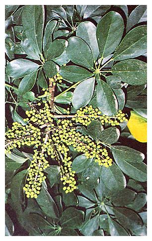 | 鵝掌藤 |
| Schefflera arboricolaHayata | ||
| 五加科 Araliaceae | ||
| 65 |  |
黃金葛、黃金藤 |
| Scindapsus aureum | ||
| 天南星科 Araceae | ||
| 66 | 紫錦草 | |
| Setcreasea purpurea Boom | ||
| 鴨趾草科 Commelinaceae | ||
| 67 |  |
金午時花、大號四米草、圓葉四米草 |
| Sida rhombifolia Linn. | ||
| 錦葵科 Malvaceae. | ||
| 68 |  |
冬珊瑚、瑪瑙珠 |
| Solanum capsicastrumLinkex Sehauer | ||
| 茄科Solanaceae | ||
| 69 | 白鶴芋 | |
| Spathiphyllum kochii | ||
| 天南星科 Araceae | ||
| 70 | 大葉桃花心木 | |
| Swietenia macrophylla | ||
| 楝科 Meliaceae |
| 編號 | 照片 | 名稱 |
| 71 |  |
黃紋合果芋 |
| Syngonium podophyllumcv.‘Atrovirens’ | ||
| 天南星科 Araceae | ||
| 72 |  |
假人參、土人參、參仔葉 |
| Talinum triangulare Willd | ||
| 馬齒莧科Portulacaceae | ||
| 73 |  |
斑葉鴨趾草、吊竹草、金線草 |
| Zebrina pendula Schnizl | ||
| 鴨趾草科 Commelinaceae | ||
| 74 | 蟹爪花、螃蟹蘭、蟹爪仙人掌、蟹足仙人掌 | |
| Zygocactus truncatus(Haw)Schum | ||
| 仙人掌科 Cactaceae |